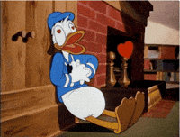
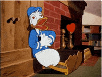

MY ANGEL IN DISGUISE
This girl just randomly popped up in my life, and out of nowhere, she has become the most important person to me.
FYI - She's the most amazing person ever.
THIS IS HER:

She is literally sooo good and talented in every aspect possible (eta o nije believe korena but I do, always will, big hehe)
Her special qualities include A TON of things,
- She is immensely cute, like if she would have to be compared with even her fav actress, I'm sure she would win :]

- She can make me smile even in my worst possible moods, the best thing is
She dont need to make any effort to do that!! just spending time with her and getting lost in her smile does all the work

(first time bechari amaye pic edit korte dilo but koto try koreo holona XD)
Her vibe and aura are soo attractive that every person in my house appreciates her presence more than ANYONE else's, literally even my pishi said 'This Ma'am is so cute and jolly!'
- She takes THE BEST pictures, like:


Excellentt khabar banate pare XD, but amare khawaye na kichu :[[[


She can make super cute crafts and her colour, design, destination, all choices are PERFECT!!

And ei je enar sweet sa family member, Mumma. She is the sweetest pet dog I've ever witnessed in my life, shotti majhe kidnap kore nite ichha kore, dog ar owner dujon kei XD
I really wanna meet her soon :[

Btw.. my most fav pic of her is this one :3
 

Gaaaaali dibinaaaa, just could'nt get over your eyes and smile, hehe
Here goes the picture that got us talking

This was the first time I just got lost in your picture


These 2 images are very close to my heart


There was no specific reason to write all of this, just that i wanted to show a few pictures related to u that are absolutely encaged inside me
You are not just a friend to me, jodi ami duniyar shob adjectives ar attributes o use kortam, i still would end up lacking words to describe how much of a gift from life you are to me.
I know bhul bhal bokchi XD, janina ar ki likhbo but know one thing that, this girl above, is all i ever wished for from God, honestly Shraddha,
YOU ARE THE BEST THING THAT COULD EVER HAPPEN TO MY LIFE
Thank you so much for being you, tolerating my bullshit all day and allowing me the space in your life, No matter what i do, it'll never be anywhere close to the "SUNSHINE" you brought in my life, that too unkowningly
My Apricity :]